This project showcases a Jenkins pipeline that automates the deployment of a web application (love calculator) to
AWS. The Jenkins
pipeline implements advanced Jenkins features such as:
multi-branch pipelines
boolean parameter
junit report
input for manual intervention
fingerprinting
archival of artifacts
email notification
In addition to building the application, the CI/CD pipeline creates a Docker container, which is first uploaded
to Docker Hub and subsequently pushed to AWS Elastic Container Registry (ECR). The containerised application is
then deployed to AWS Elastic Beanstalk for production use. This setup showcases a complete CI/CD pipeline,
starting from code integration, automated testing, Docker image creation, and deployment to production. By
leveraging Jenkins for automation and AWS for scalable deployment, this project demonstrates end-to-end delivery
of web applications, ensuring efficient and reliable application releases.
Jenkinsfile configuration (Declarative Pipeline)
The Jenkins job is configured with the following features:
Build trigger, Maven build, unit tests, static code analysis, containerisation and email notification
Multi-branch pipelines are used to automatically create a pipeline for each branch in the repository,
enabling each branch to have different CI/CD pipeline configurations. For this to work, the
'Multi-Branch Pipeline Job' has to be selected in Jenkins UI and each feature branch will need to have
its own Jenkinsfile.
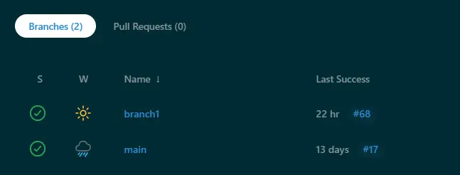
Multi-branch pipelines
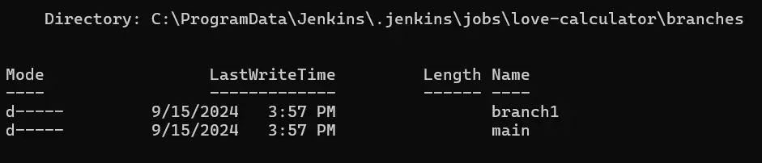
Multi-branch pipelines in terminal
Boolean parameter
A boolean parameter is a type of build parameter that allows the user to include a simple checkbox in the build
configuration.The pipeline uses a boolean parameter which determines whether the application should be
containerised
and deployed to Docker Hub. The default value is set to True so that the build will be automatically
containerised whenever there is a code change in the repository. The boolean parameter is defined in a
parameters block. It is then conditionally
executed based on the boolean value passed.
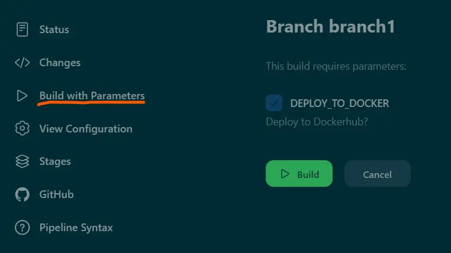
Boolean checkbox
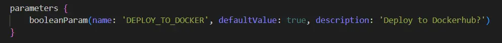
Parameters block
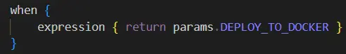
Conditional execution (When)
JUnit report
The 'junit' pipeline step processes the JUnit test result files and displays the unit tests results in
Jenkins. The code used below informs Jenkins to use the provided path pattern to locate the
JUnit XML files generated by the tests.
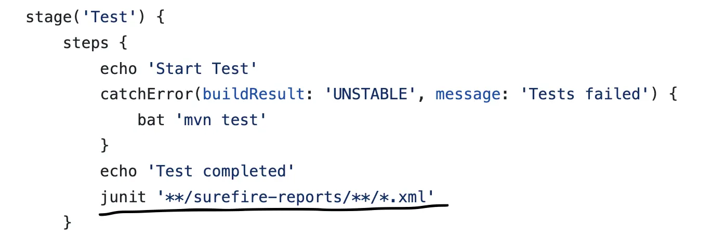
junit code snippet
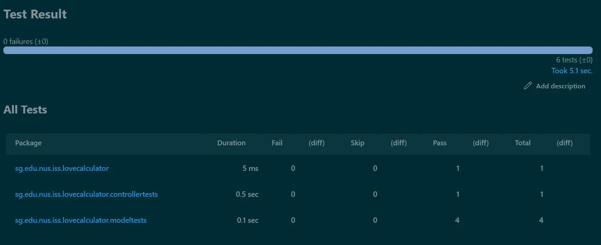
Unit test results
Input for manual intervention
The input step is pauses the pipeline and waits for user input (manual intervention) before continuing with
the execution of the job. The input step used in the pipeline waits for user input in deciding whether to
approve a deployment to production. If not approved, it proceeds straight to the post stage to email the
results of job build.
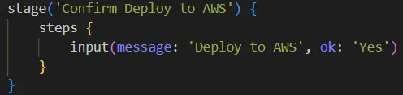
Input code snippet
Archiving and Fingerprinting
Archiving saves the build artifacts generated by the build, making them available for download. The archive is
stored in the build workspace. It stores
things like build logs, JAR files, WAR files and reports. Meanwhile, fingerprinting tracks the usage of
files (artifacts) across different jobs or builds. A hash (md5 checksum fingerprint) is created for each
file which tracks which build the the file was first created and usage across jobs if any.
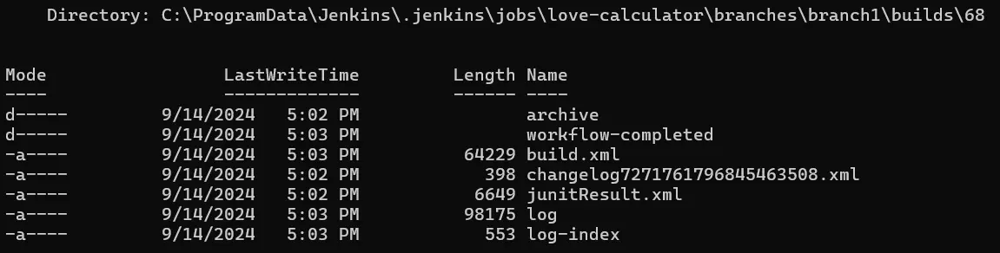
Build workspace
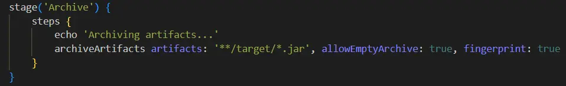
Archiving and fingerprinting code snippet
Archived artifact and fingerprint
Deployment to AWS
The deployment to AWS involves a series of setup in the AWS Management Console and code snippet in the
Jenkinsfile. This Medium article
provides a good tutorial on deploying the build to AWS.
Containerise the build
Containerise the build using Docker. The Docker build instructions are stored in a Dockerfile.
Push the image to AWS Elastic Container Registry (ECR)
The image is pushed to ECR. A repository needs to be created first in ECR before the push can happen. In the
code snippet, user first logs in to ECR and then pushes the build to ECR.
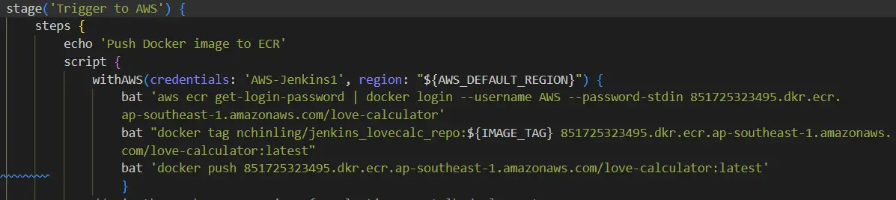
Log in and push to ECR
Create a Dockerrun.aws.json file
Create a Dockerrun.aws.json file at the root of the repository. It is used by AWS Elastic Beanstalk to
configure and deploy Docker-based applications. It contains the configuration details needed for Elastic
Beanstalk to run the application inside Docker containers. AWSEBDockerrunVersion specifies the version of
the Dockerrun file format. '1' is for single-container Docker environments. The image name specifies the
Docker image to be used from ECR. The "Update": "true" tag specifies that whenever a new version of the
image
is pushed to
ECR, Elastic Beanstalk will use the latest version for deployment. Finally, ContainerPort:8080 means the
container is exposing port 8080, allowing the application inside the Docker container to be accessible
through this port. The file is zipped to be deployed to ECR.
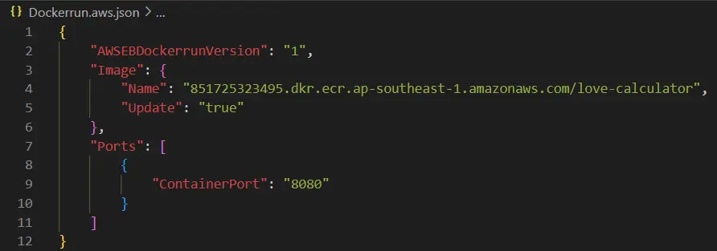
Dockerrun.aws.json
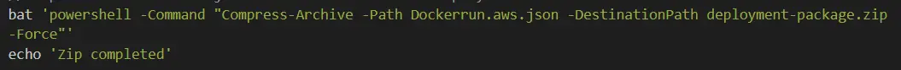
Zip the build
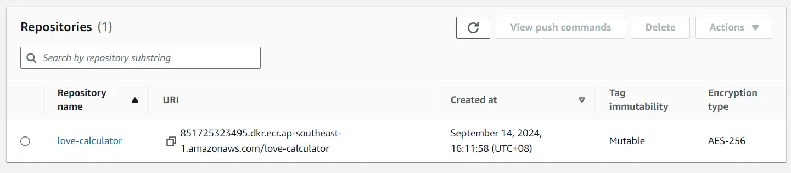
ECR repository
ECR images
Elastic Beanstalk
AWS Elastic Beanstalk is a Platform as a Service (PaaS) offered by AWS that simplifies
the deployment and management of web applications and services.
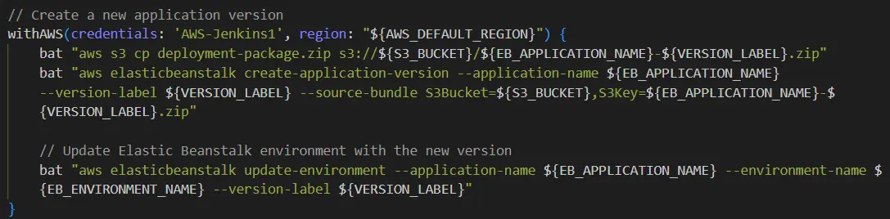
AWS Elastic Beanstalk code snippet
Environment
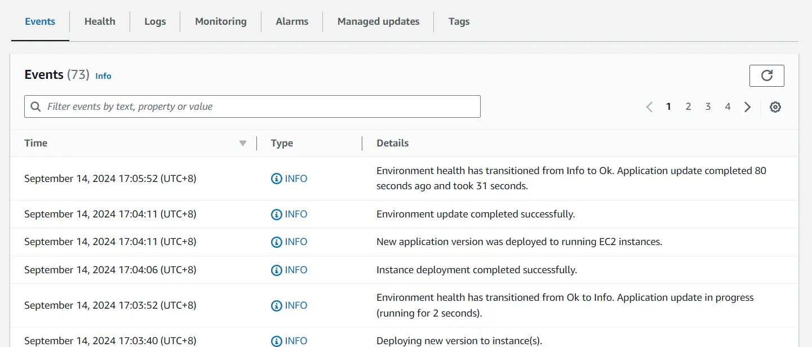
Event log in AWS Elastic Beanstalk
Application
Once Elastic Beanstalk completes the deployment, the application will be fully configured and automatically
accessible online, allowing users to interact with it immediately.
Love calculator web application
The following video demonstrates the implementation and execution of the Jenkins pipeline.